Figures as of23 Sep 2026
What the Iran war and the tariffs cost an American household, measured only in the government's own numbers.
Eleven animated blocks. Every source shown.
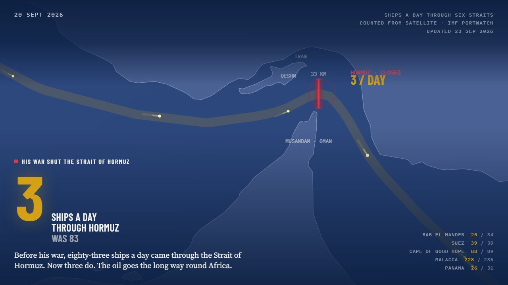
- +$89 a month, a household
- $1,636 since 20 Jan 2025
- $96.41 crude, 22 Sep
- $114.58 crude peak, 7 Apr
- 3 ships a day through Hormuz, was 83
- $6.53 diesel, a record
- 42,474 new jobs a month, was 320,938
- $43.6bn the war so far
- 164 t gold out of the New York Fed
The bill so far
As of 23 Sep 2026
What it adds to a household's month
Plus 89 dollars a month for a household.
a month for a household.
Since 20 Jan 2025: $1,636
Pick your state on the live page and the total re-flips for it.
Crude oil, a barrel
at the peak on 7 Apr, from $57 in January. $96.41 on 22 Sep.
Strait of Hormuz
ships a day, down from 83 before the war.
7-day mean to 20 Sep, IMF PortWatch.
Diesel, a gallon
on 21 Sep, a record for the EIA series.
New jobs a month
since January 2025, against 320,938 a month in 2021-25.
What the war has cost
so far, the Pentagon's own estimate as of 3 Sep.
Reported by Roll Call.
Gold leaving New York
tonnesof foreign gold taken out of the New York Fed over eleven months.
In text: plus $89 a month for a household, $1,636 since 20 January 2025. Crude oil went from $57 in January to $114.58 at the peak on 7 April, and was $96.41 on 22 September. The Strait of Hormuz carried 83 ships a day before the war and 3 now, the 7-day mean to 20 September from IMF PortWatch. Diesel was $6.53 a gallon on 21 September, a record for the EIA series; the previous peak was $5.81 in June 2022. 42,474 new jobs a month since January 2025, against 320,938 in 2021-25. The war has cost $43.6 billion, the Pentagon's estimate as of 3 September, reported by Roll Call. 164 tonnes of foreign gold left the New York Fed over eleven months.
Eleven blocks, one scroll
The live page is a single scroll. Each block plays once as it comes into view, then holds still, and each has a panel that shows the work: the series, the dates, the method.
-
Block 00: The globe
Ships a day through six straits, counted from satellite. Scroll, and Hormuz falls from 83 to 3 while the other five hold.
-
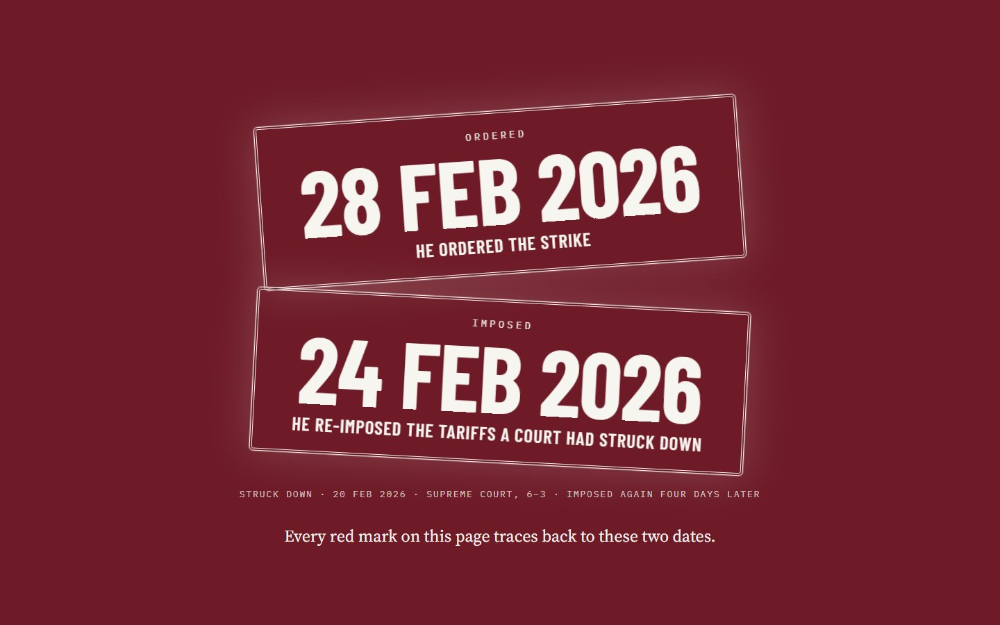
Block 01: Two dates
24 Feb, the tariffs re-imposed. 28 Feb, the strike. Every red mark on the page traces back to one of them.
-
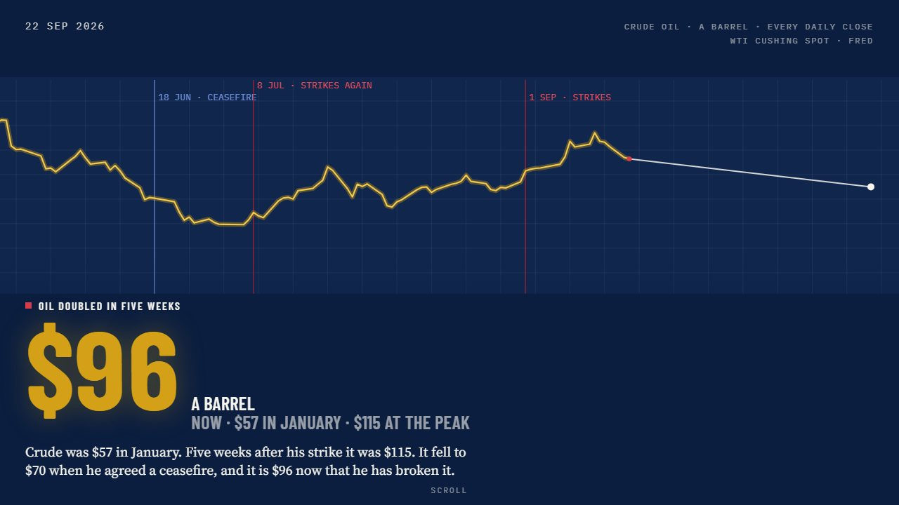
Block 02: Oil doubled
Every daily WTI close on a moving seismograph: $57 in January, $114.58 at the peak on 7 April.
-
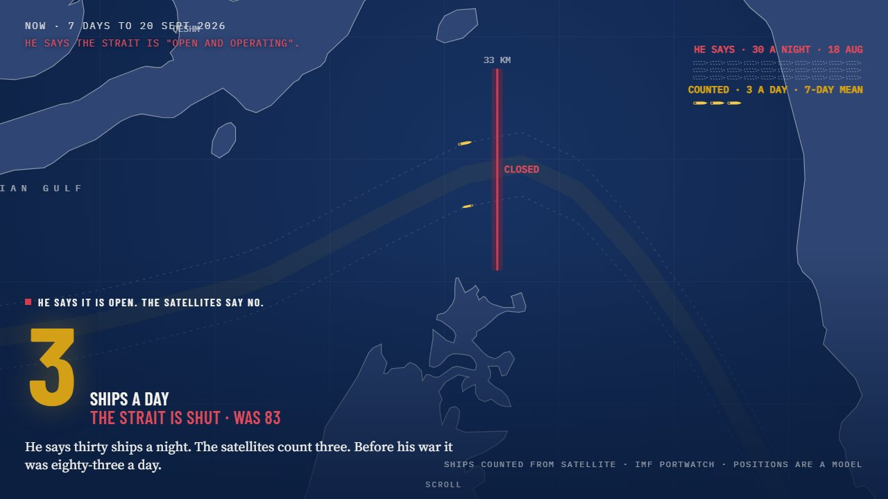
Block 03: The strait
One ship on screen for each ship a day: 83 before, 3 now, drawn beside the claim of "30 a night".
-
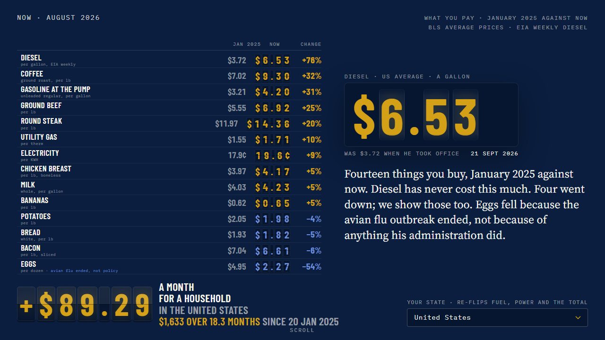
Block 04: Your prices
A split-flap board of fourteen prices. Pick your state and the fuel and power rows flip to it; a link like ?state=CA opens straight on one.
Try it with ?state=CA -
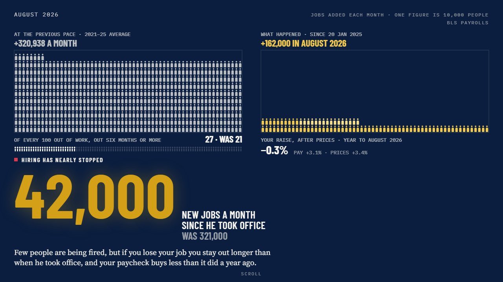
Block 05: Nobody is hiring
One figure per 10,000 jobs, and why jobless claims are low while hiring is frozen.
-
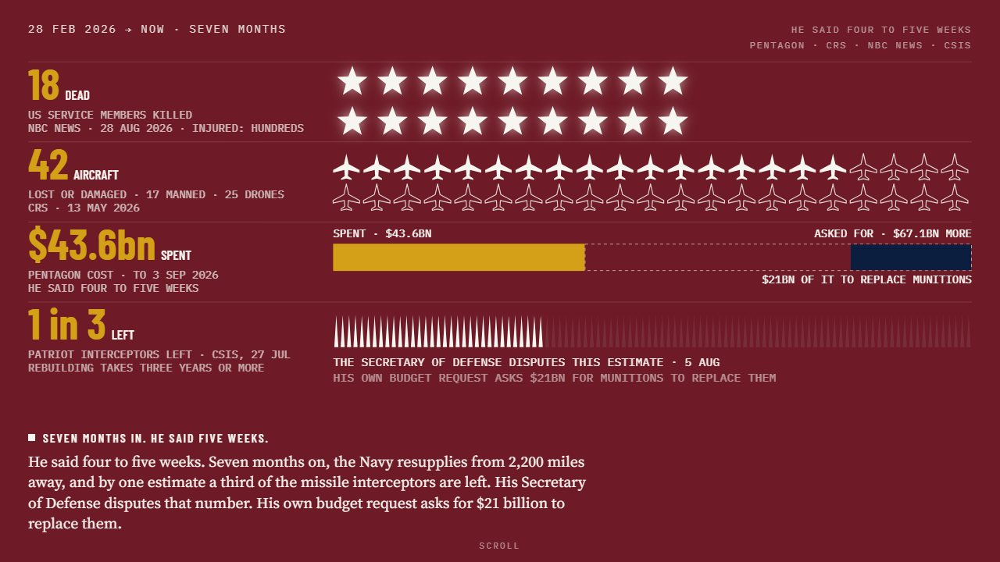
Block 06: What the war cost
18 US service members killed, per the official count. 42 aircraft lost or damaged. $43.6bn spent. The disputed interceptor estimate is printed beside the dispute.
-
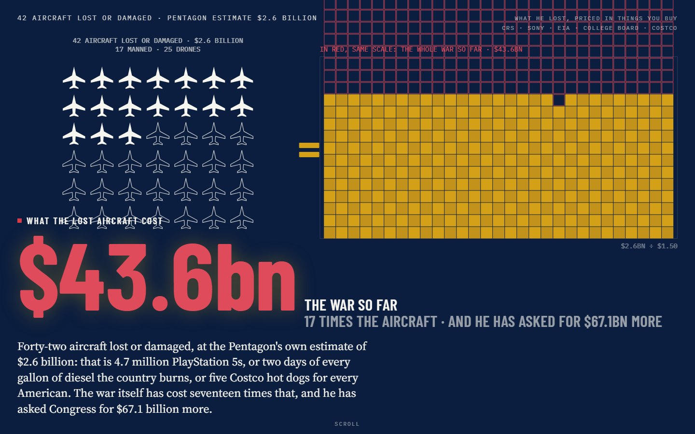
Block 07: What it buys
The lost aircraft priced in PlayStations, gallons of diesel, years of tuition and hot dogs.
-
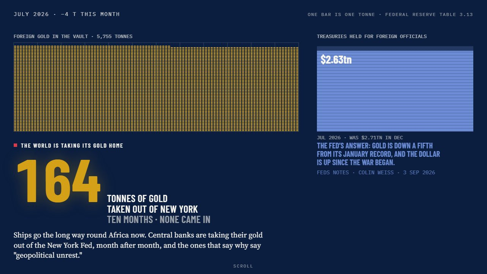
Block 08: The world backs away
Gold leaving the New York Fed, month by month, with the Fed's own rebuttal at full size.
-
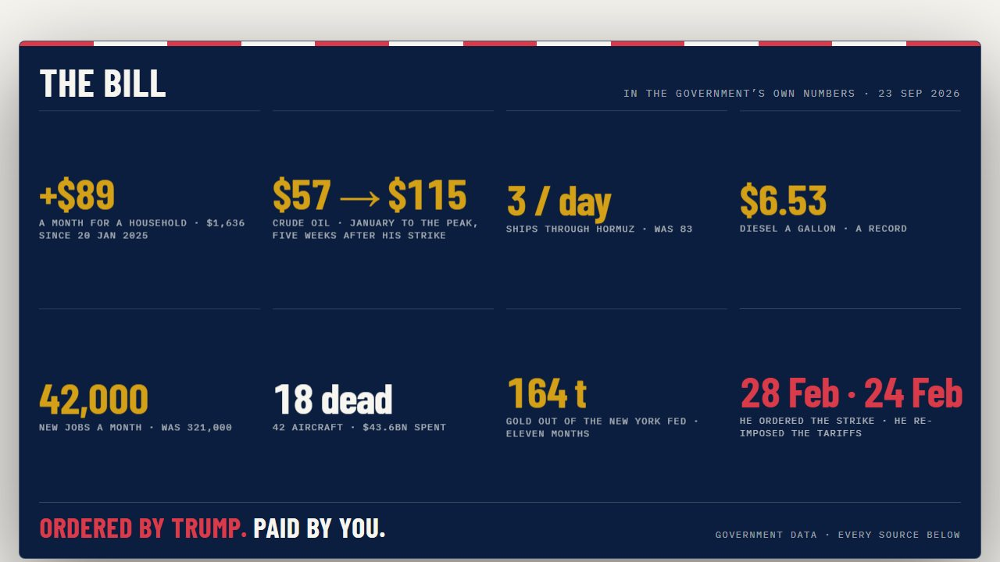
Block 09: Your bill
The share card, rendered from the real block, so the card and the page can never disagree.
-
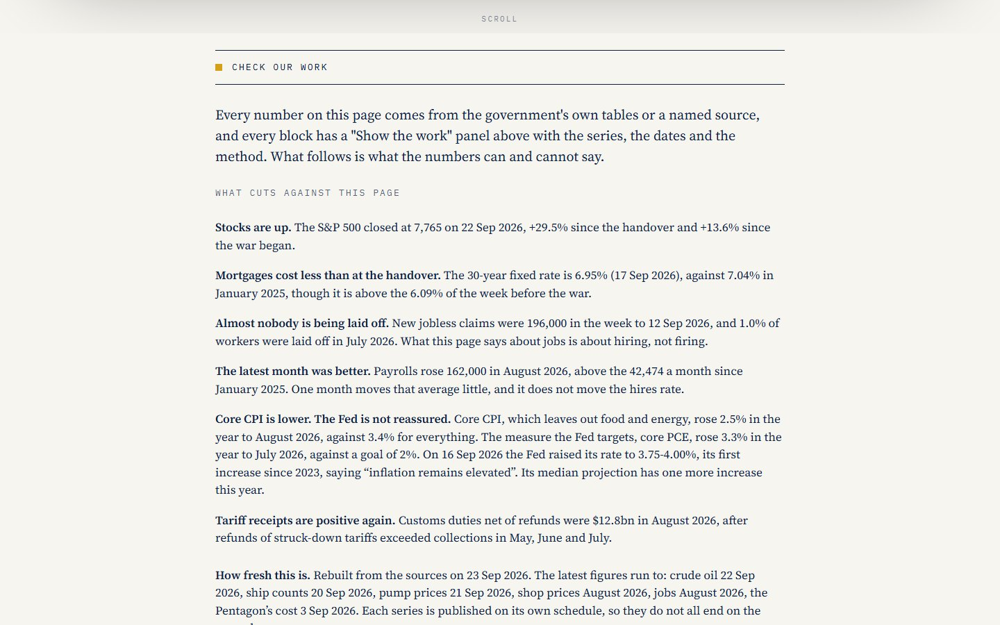
Block 10: Check our work
What cuts against the page, and how fresh each figure is.
How it stays honest
-
Zero fabrication
Every figure comes from a government series or a cited, tiered source.
-
No moving figure is typed
A verdict like "a record" is computed from the full series on every refresh, so the words cannot outlive the numbers.
-
What cuts against the page, at full size
The page prints the numbers that argue the other way, as large as its own.
- Stocks are up
- Mortgages cost less than at the handover
- Few people are being laid off
- Core inflation is modest
- Customs receipts were positive again in August
-
The claim beside the count
Where an official says one thing and the measurement says another, both are drawn, side by side.
The claim
"30 a night"
The satellites, 7-day mean
3 a day
-
Gaps stay gaps
The October 2025 Consumer Price Index was never collected. The page leaves the month empty and says so.
JulAugSepOctnoneNovDecJanConsumer Price Index, Jul 2025 to Jan 2026. October was never collected.
How it works
Public numbers in, one static page out, and a gate in the middle that refuses to ship anything stale or broken.
-
1 Sources
Public sources
- FRED
- EIA
- Treasury
- IMF PortWatch
- BLS
- Curated, tiered figures
-
2 Snapshot
One snapshot
Every series pulled into a single file,
data-snapshot.json. -
3 Gate
Validation gate
Stops a stale or broken deploy before it reaches anyone.
-
4 Cut
The V5 data cut
The snapshot cut into the few small files the page reads.
-
5 Site
A static site
Served from Cloudflare Pages. Nothing is fetched from a CDN at read time.
Refresh is one command
Rebuild, gate, test, build and deploy, run on demand after something moves the numbers.
.\backend\scripts\refresh.ps1
Every refresh is logged
Each run appends the headline figures to a public file, so the history of every number is on the record: docs/refresh-history.csv.
In one hand
The same page on a phone: the globe, the price board and the bill, laid out for a narrow screen.
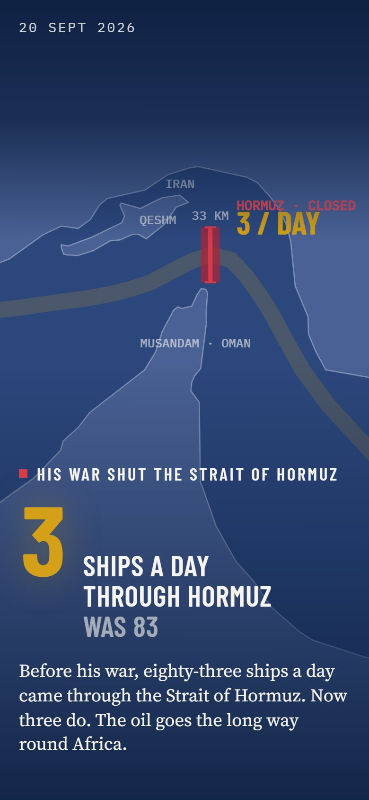
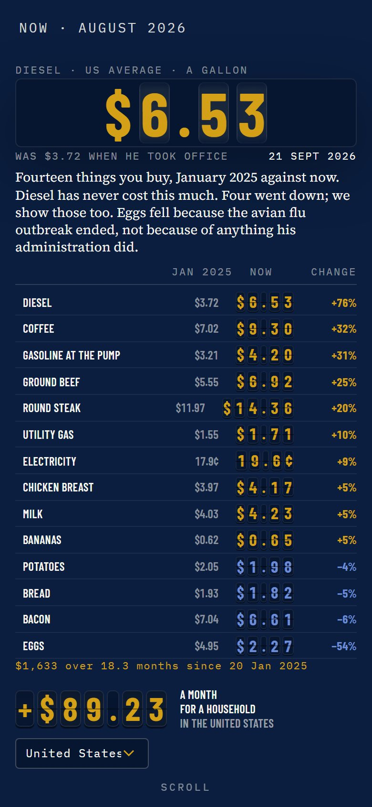
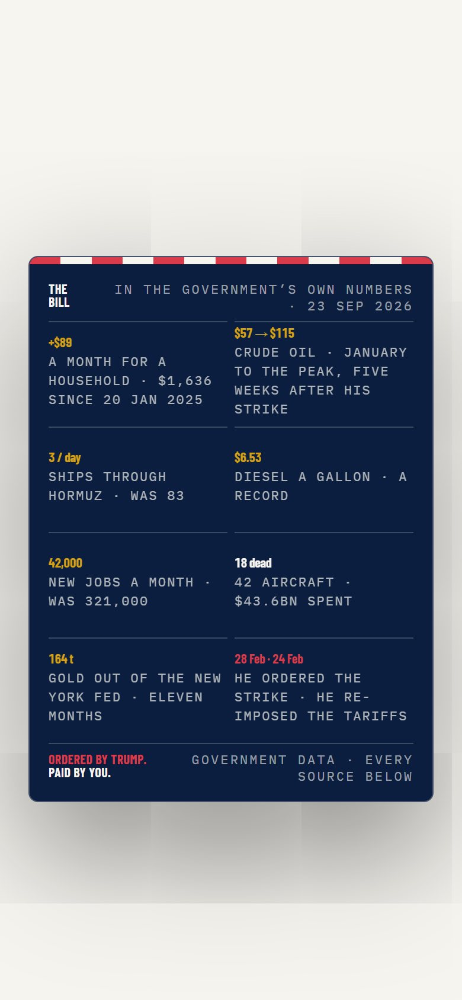